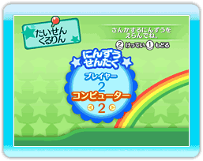
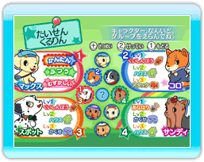
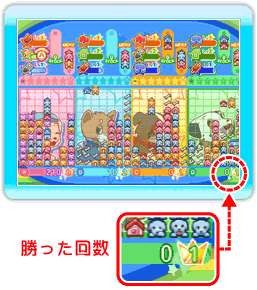
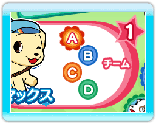
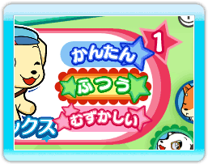
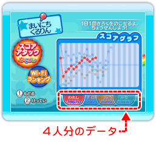
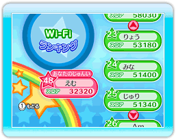
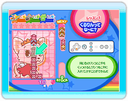

15 |
モードの紹介2 |
 |
|

◆ たいせんくるりん 友だちや仔犬（COM：コンピューター）と最大4人で対戦できるモードです。十字ボタンで人数とキャラクターを決めてください。  ※友だちと対戦するときは、人数分のWiiリモコンを用意してください。 最大4人で対戦できます。

3人以上のときは、グループ戦も楽しめます。チーム一丸でほね攻撃ができます。

「なんいど」を低くするとピースの落下速度が遅くなって、相手から送られてくる「ほね」の量も少なくなります。強い人と弱い人が対戦するときなど、「なんいど」でハンデを調節しましょう。
◆ まいにちくるりん 1日1回くるりんの成長を確認できるモードです。またスコアはニンテンドーWi-Fiコネクションで全国とつながり、スコアランキングを見ることができます。

「スコアアタックかいし」で
ゲームが始まります。 スコアグラフで成長を確認しましょう。 5分間のハイスコアを競います。

「Wi-Fiランキング」で全国ランキングを確認しましょう。（次のページ参照）
 ◆ せつめい くるりんの遊びかたをおぼえたり、トレーニングができるモードです。
|
 |
 |
 |